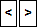

Configure field mapping
When synchronising data between SuperOffice and ERP systems, you have to specify which SuperOffice field and which ERP field belong together.
Note
When editing an ERP connection, you first need to deactivate it.
Go to the Sync tab in the Quote/Sync screen. The ERP connections list shows existing ERP connections.
Uncheck the Active box for the ERP connection you want to edit.
Select the ERP connection, and click the Mappings button at the bottom. The Mappings dialog displays the tabs for the available actors in the ERP system.
Select the tab for the actor for which you want to configure allocations.
Check Sync ERP [actor] to SuperOffice [entity].
In the list below, select the synchronisation direction and which SuperOffice field each ERP field should be allocated to (synchronised with). You can also choose whether the fields should be displayed in searched and the ERP tab. The list consists of the following columns:
Show in Search: Check here if this field is to be displayed in search results.
ERP Field: Shows the name of the field in the ERP system.
Direction: Here you select the direction(s) for the synchronisation.
What does the icons mean?
Icon Explanation  No synchronisation (SuperOffice field is selected). If the field is mandatory, you MUST choose a direction. 
Sync both ways. 
Sync from SuperOffice to the ERP system. 
Sync from the ERP system to SuperOffice. No synchronisation (SuperOffice field is NOT selected), or the field cannot be synchronised (customer name etc.). This can also be due to read-only fields. Mouse-over the icon to view details. Note
The arrows are disabled until you have selected a SuperOffice field.
SuperOffice Field: here you choose which SuperOffice field you want to synchronise. Some fields (such as customer and contact IDs) cannot be synchronised and the list will then be empty.
Show In ERP Tab: check here if you want this field to be displayed in the ERP tab in SuperOffice CRM.
Note
If you have chosen to synchronise this field with a SuperOffice field, there is no point in displaying the field in the ERP tab.
Where is the ERP tab displayed?
- The Company screen
- The Project screen
- The Contact screen
Repeat steps 4 to 6 to configure field allocations for other actors.
Click Done to finish. Underneath the ERP connections list, all the fields which are synchronised for the different actors are shown.
Check Active for the ERP connection you have edited.
Troubleshooting
If you have defined incorrect settings for the field allocations, you will receive a descriptive error message. This would apply for instance to a mandatory field without a synchronisation direction. You need to correct the error before you can activate the ERP connection.
How to map/allocate list items
If you have mapped any lists (for example category), you must also map the individual items on each list. See Configure list mapping.